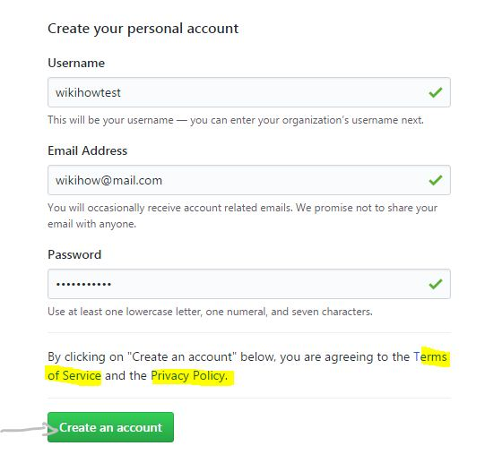
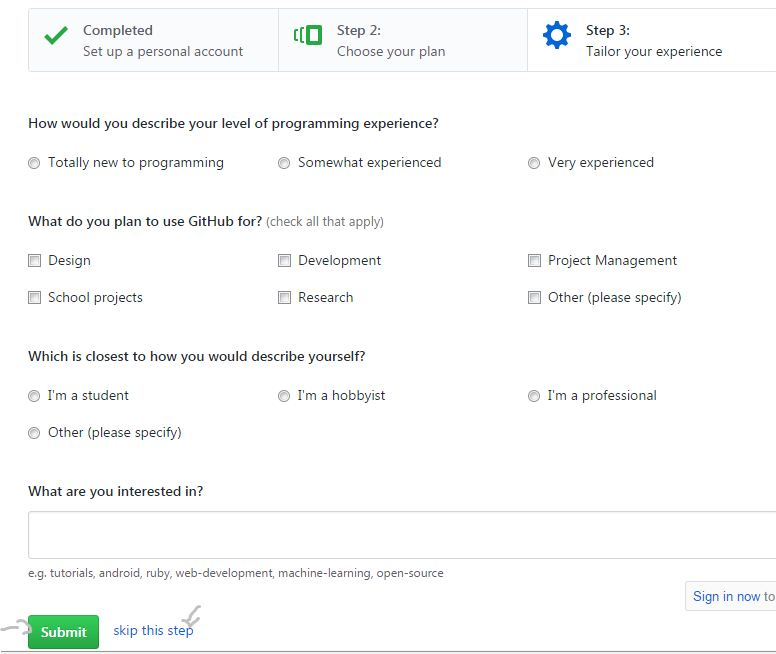

1. Go to the GitHub sign up page.
2. Enter a username, valid email address, and password.Use at least one lowercase letter, one numeral, and seven characters.

3. Review carefully the GitHub Terms of Service and Privacy Policy before continuing. Upon clicking the “Create an account” button you will simultaneously be agreeing to these documents.
4. Choose a plan. You have two choice: Free and paid, the paid version has private repositories with $7/month. You should try the free version then have the suitable choice.

5. 登入所登記的 email 帳號, verify 電子郵件信箱後起啟用 Github 帳號.
http://blog.kevinlinul.idv.tw/?p=369
https://github.com/twtrubiks/Git-Tutorials